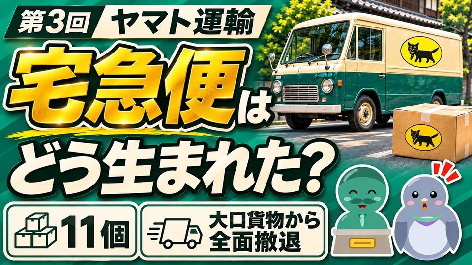
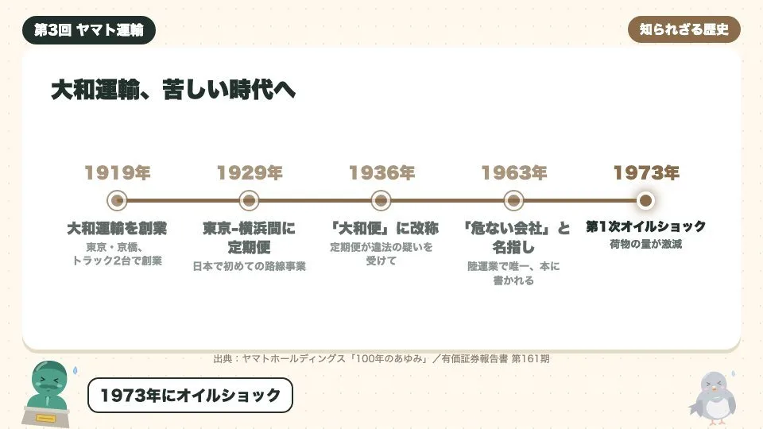
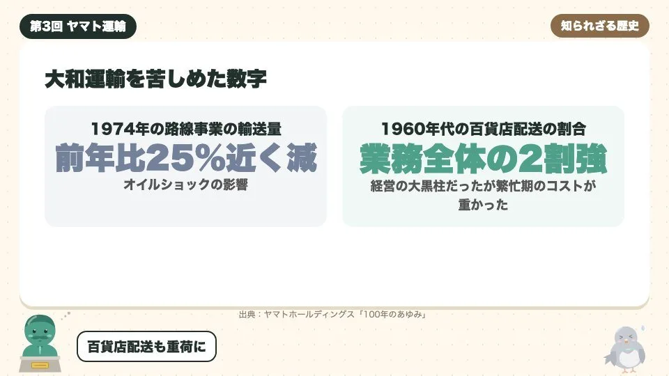
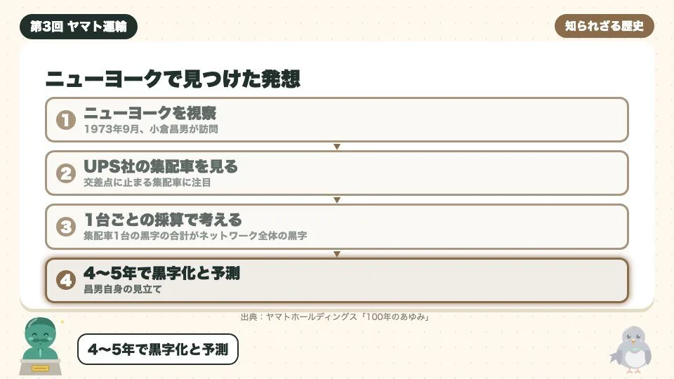
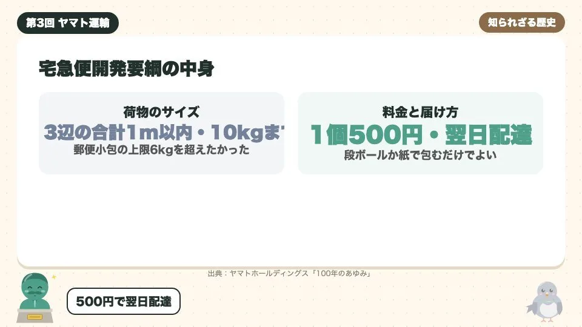
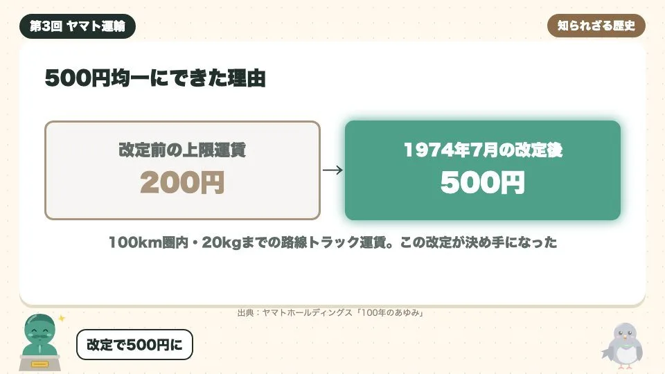
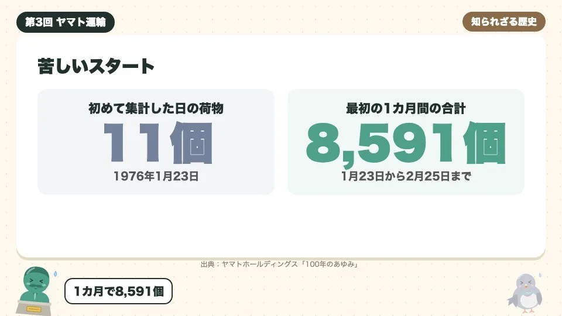
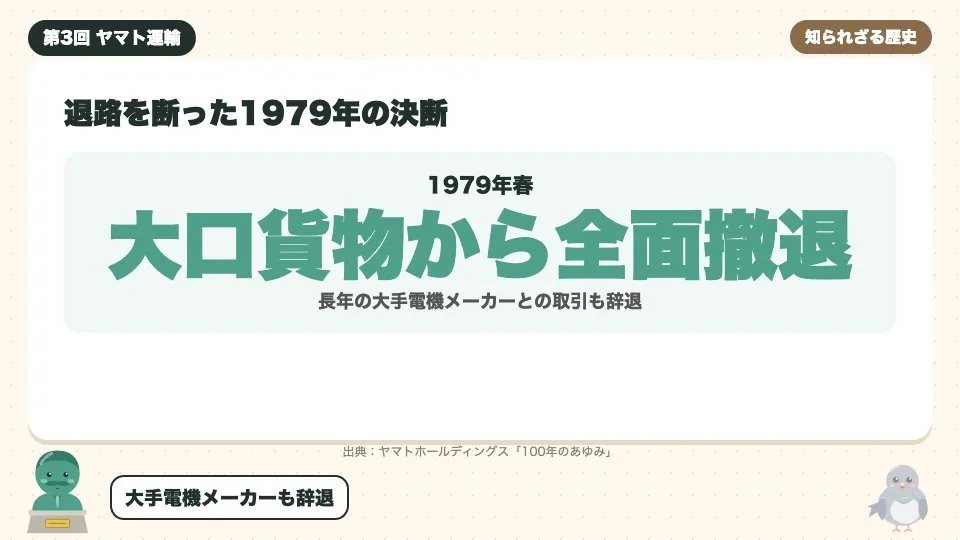
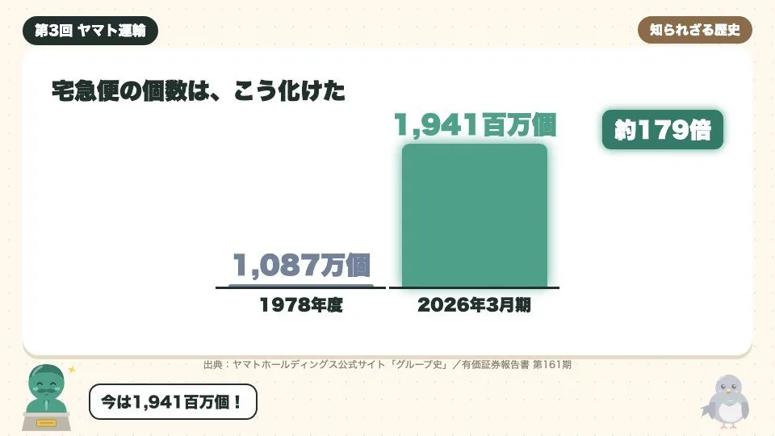
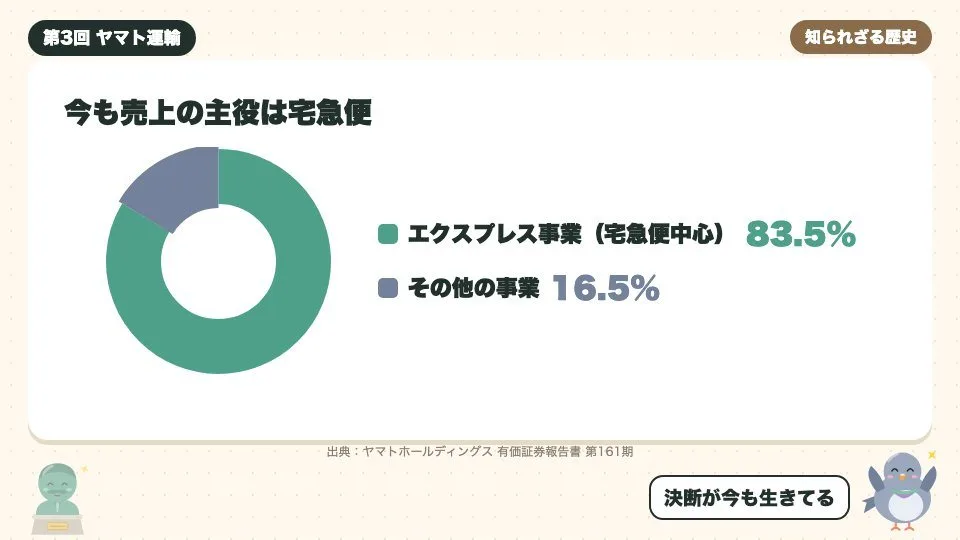

ヤマト運輸の宅急便は、1976年1月20日に東京23区と関東6県で誕生しました。発売当日の荷物はわずか11個、最初の1カ月間でも8,591個という苦しいスタートでした。それでも1979年春、当時の社長・小倉昌男は、儲かっていた大口貨物からの全面撤退を決断します。この記事では、ヤマトホールディングスが公式サイトで公開している社史「100年のあゆみ」と、国に提出した有価証券報告書の数字だけで、宅急便が誕生し、今の規模に育つまでの道のりをたどります。数字は2026年11月24日時点で確認したものです。

▶ この記事の内容を動画で見る（ビジネス解体新書）01「危ない会社」と名指しされた大和運輸の苦しい時代

ヤマト運輸は、もともと大和運輸という名前でした。1919年、東京の京橋で創業し、1929年には東京-横浜間に定期便を開始します。これが日本で初めての路線事業でした。ところが1936年、この定期便が無許可の路線事業にあたると疑われ、「大和便」という名前に変えさせられます。さらに1963年には、ある本の中で陸運業でただ一社「危ない会社」と名指しされました。陸運業の中で唯一名指しされるほどの、厳しい評価でした。

1973年には第1次オイルショックが追い打ちをかけ、1974年の路線事業の輸送量は前年比で25%近く減りました。当時、百貨店の配送が業務全体の2割強を占めていましたが、繁忙期の人手とコストが重く、経営の支えにはなりきれませんでした。
02ニューヨーク視察で見つけた「1台ごとの採算」という発想

きっかけは1973年9月でした。2代目社長の小倉昌男が、ニューヨークの営業所を訪ねた際、アメリカ最大手の運送会社・UPS社の集配車を目にします。集配車1台ごとの黒字を積み上げれば、ネットワーク全体が黒字になるという発想を得たのです。昌男はこのとき、4年から5年で黒字になると見積もっていました。
03宅急便開発要綱の中身、500円均一にできた理由

1975年、役員会に「宅急便開発要綱」が提出されます。荷物のサイズは3辺の合計1m以内・10kgまで。段ボールか紙で包むだけでよく、運賃は1個500円、翌日配達と決まりました。

500円均一にできたのには、国の規制改定という追い風がありました。宅急便も路線トラックの一種として国の規制を受けており、運賃の上限はそれまで200円。500円均一にする余裕がありませんでした。それが1974年7月、国の改定で上限が500円まで引き上げられ、採算の取れる値段を付けられるようになったのです。
社内では、百貨店配送のように人手とコストで儲からなくなることを恐れ、経営幹部の多くが反対しました。それでも昌男は、荷物の繁閑の差はせいぜい2倍、翌日配達なら荷物は必ず増えると言い切ります。労働組合の不安には、公用車を廃止して電車通勤に切り替えることで応え、協力を取り付けました。
04発売当日はわずか11個、苦しいスタート

そして1976年1月20日、宅急便が発売されました。対象は東京23区と関東6県、都下24店・関東6県60店の体制でのスタートでした。発売当日の荷物は、初めて集計した1976年1月23日の時点でわずか11個でした。最初の1カ月間（1月23日から2月25日まで）の合計でも、8,591個にとどまります。
1976年8月に開いた中野宅急便センターも、開店から1週間荷物が一つも持ち込まれませんでした。荷物を増やしたのは、家の近くの取扱店です。栃木県の酒屋・三島屋商店では1日およそ100個が持ち込まれ、伝票書きのアルバイトを雇うほどでした。1976年10月には都内だけで24店舗と契約。1977年12月に月間の取扱個数が100万個を突破しますが、宅急便の売上はまだ会社全体の9%でした。同業他社の目は冷ややかでしたが、昌男は「サービスが先、利益は後」と言い続けました。
ポイント発売から2年近くたっても、宅急便の売上はまだ会社全体の9%でした。それでも「サービスが先、利益は後」を貫いたことが、次の決断につながります。
051979年、大口貨物から全面撤退した理由

月間100万個を達成してもなお宅急便が会社の主役になりきれない中、昌男は1979年春、大口貨物からの全面撤退を指示します。長年続けてきた大手電機メーカーとの取引もすべて辞退しました。儲かっていた仕事を自ら手放し、家庭の小さな荷物1個ずつの採算を追い求める道を選んだのです。
その後、1981年12月に月間1,000万個、1983年度には年間1億個を達成します。節目のたびに社員へお祝いのどら焼きが配られました。当時は35ブランド113社もの会社が参入し、多くが動物のマークを真似たため「動物戦争」と呼ばれましたが、大和運輸は「ダントツ3ヵ年計画」を掲げて対抗。のちに社名もヤマト運輸に変わりました。
注意「ヤマト運輸」は、のちに使われるようになった社名です。持株会社化にともない、現在の社名はヤマトホールディングス株式会社です。この記事では分かりやすさのため、発売当時の経緯も含めて「ヤマト運輸」と表記しています。
06宅急便は今どれくらいの規模になったのか

取扱店は1989年3月に20万店に達し、宅急便の開始から21年後の1997年11月、全国ネットワークが完成しました。個数の伸びを比べると、約179倍に増えました。
| 項目 | 1978年度 | 2026年3月期 |
|---|---|---|
| 宅急便の年間個数 | 1,087万個 | 1,941百万個（約179倍） |

今のヤマトホールディングスの連結営業収益は、2022年3月期の1.79兆円から2026年3月期には1.87兆円まで伸びています。そのうち、宅急便を中心にしたエクスプレス事業が連結営業収益の83.5%を占めており、1979年に大口貨物を手放した決断は、今の事業構成にそのままつながっています。
同じビジネス解体新書のコストコはなぜ安いのに儲かるのか 営業利益の約半分は会費も、公式の年次報告書の数字だけで解説しています。
07よくある質問
宅急便はいつ発売されましたか？
1976年1月20日に、東京23区と関東6県で発売されました。都下24店・関東6県60店の体制でのスタートでした。
発売当日の荷物の数はどれくらいでしたか？
初めて集計した1976年1月23日の荷物は、わずか11個でした。最初の1カ月間（1月23日から2月25日まで）の合計でも、8,591個にとどまりました。
なぜ大口貨物をやめたのですか？
1977年12月に月間100万個を突破しても、宅急便の売上は会社全体の9%にすぎませんでした。それでも昌男は1979年春、大口貨物からの全面撤退を指示し、長年の大手電機メーカーとの取引も辞退しました。
今の宅急便の個数はどれくらいですか？
2026年3月期の宅急便・宅急便コンパクト・EAZYの年間取扱数量は1,941百万個です。1978年度の1,087万個から、約179倍に増えました。
「ヤマト運輸」という社名は今も使われていますか？
使われていません。のちに使われるようになった社名で、持株会社化にともない、現在の社名はヤマトホールディングス株式会社です。
08まとめ
結論宅急便が生まれたのは、大口の儲かる荷物を手放し、家庭の小さな荷物1個ずつの採算を追い求めたからです。発売当日の11個から、2026年3月期には1,941百万個まで増えました。
- 大和運輸は1963年に「危ない会社」と名指しされるほど、長く苦しい経営が続いた
- 1976年1月20日の発売当日、荷物はわずか11個。それでも1979年春、大口貨物から全面撤退を決断した
- 今も宅急便中心のエクスプレス事業が、連結営業収益の83.5%を占めている